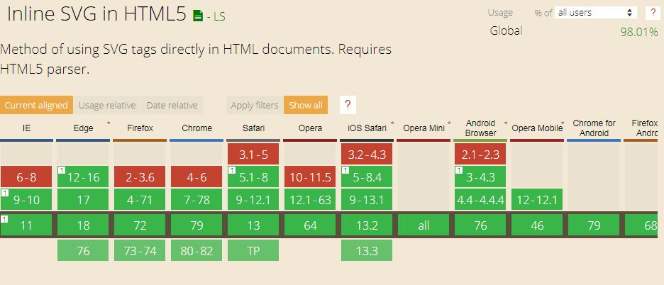
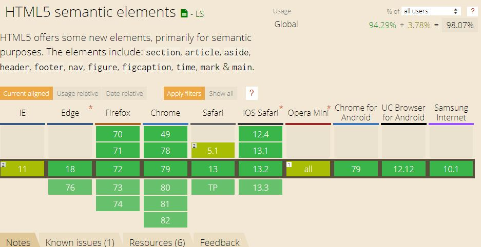
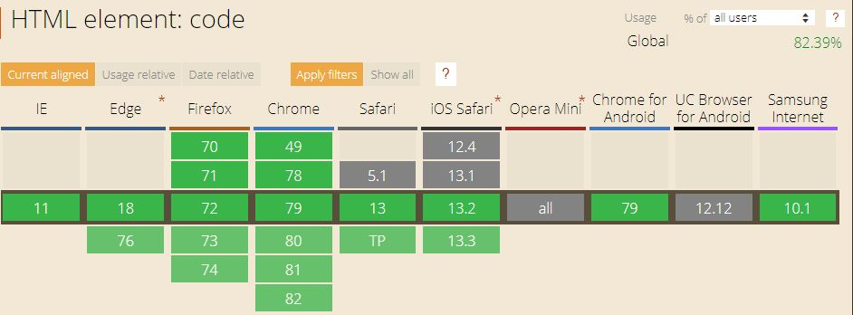
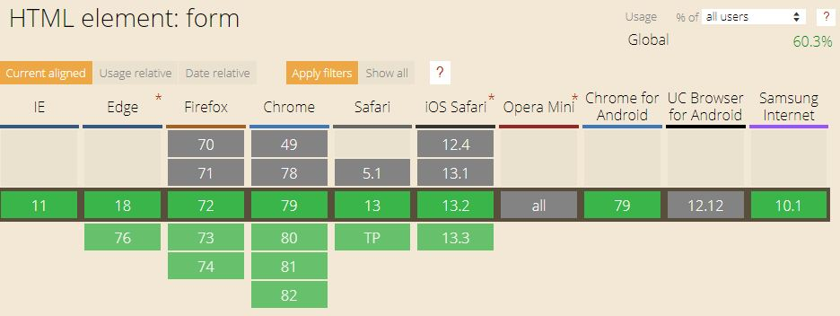
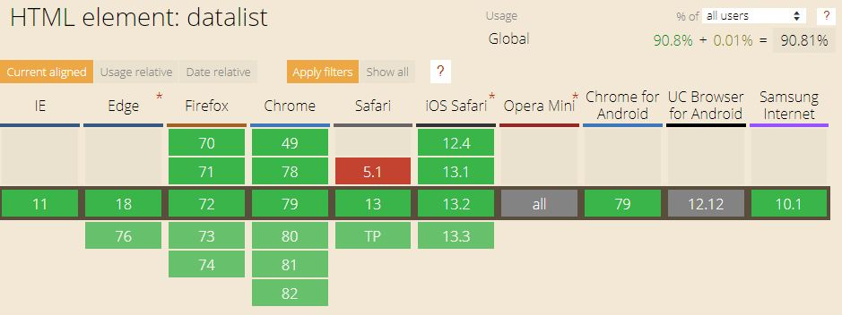

How do I see the differences between HTML and CSS?
- What is the difference between the usage of HTML and CSS?
HTML determines the structure of a webpage, whereas CSS determines the appearance of the
elements on a webpage.
- What is the newest version of HTML?
HTML5
- What are the top five most used HTML5 elements? If not sure, make a guess.
In my opinion, the most used elements are:
- <html>
- <head>
- <body>
- <h1>
- <p>
- Have you checked out the HTML5 cheatsheet?
Yes, I have. The link is here
- What is the difference between semantic and non-semantic elements?
Unlike semantic, non-semantic elements don't have any special meaning and are only used to
define the structure.
- Why do we prefer using semantic elements?
Because it provides the explicitness of the code.
- Do all browsers support all of the newest HTML / CSS elements?
No, some old versions of browsers don't support some or all new HTML5 elements.
- Test the following elements on Can I Use:
svg,
nav, code, form, datalist. Which browser
version support them and which do not?





Keyboard Shortcuts
- How do you quickly switch between different windows on your operating system? What is the shortcut?
Alt+Tab
- How do you move the insertion point to the beginning of the document / to the end of the document?
Ctrl+Home Ctrl+End
- How do you move the insertion point to the beginning of the current line / to the end of the current line?
Home End
- How do you select the text between your cursor and the end of the current line?
Ctrl+End
- How to open settings in any app?
Win+I
- How do you refresh a page?
F5 or Ctrl+R
- How do you refresh a page while emptying a cache? Why would you want to do this?
Ctrl+F5
We do that to download the newest version of the webpage.
What can you learn from style guides?
Based on the Google HTML/CSS Style Guide, what is their suggestion for:
- Why should you care about how your code is formatted?
It aims at improving collaboration, code quality, and enabling supporting infrastructure.
- How many spaces should you indent at a time?
Two spaces
- Should the code be lowercase or uppercase?
Lowercase
- What is the recommended encoding?
UTF-8
- How should you use comment to explain your code? How do you do it in HTML and in CSS?
We should use comments to explain what the block of code covers, what purpose it serves, why
respective solution is used or preferred
- How do you validate your HTML?
There are special tools such as https://validator.w3.org/nu/ to walidate the code.
- What is the purpose of the alt attribute?
To provide a meaningful alternative text or transcript for multimedia
- Should you separate structure (markup), presentation (styling), and behavior (scripting)? If yes, why?
Yes, we should. It helps to easier maintain the code.
- Should you use double or single quotation marks around attribute values?
We should use double quotation marks.
- How can you validate your CSS code?
We can use tools such as the https://jigsaw.w3.org/css-validator/ to test.
- When would you use meaningful ID/class names? When would you use generic ones?
Meaningful names should be used in most cases. Generic ones should be used only as a fallback
for elements that have no particular meaning, such as div element.